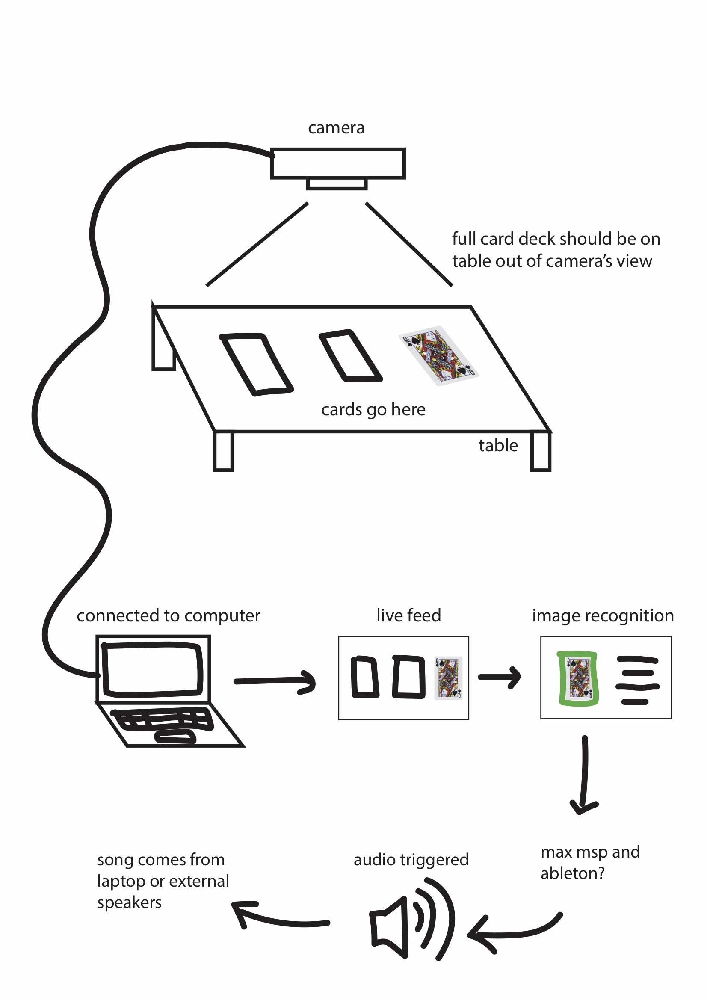

bailey foltz
bailey foltzmusical playing cards
an interactive music making experience
programmed using Google’s Teachable Machine and p5.js
background :
This program was created as a final assignment for a Designing Interfaces for Live Performances class in 2020. For my final live performance integrating interfaces, I decided to use image recognition to create music, a more tactile version of easy-to-use music generation software that just requires selecting pre-made looping beats and layering them.
Simplifying music creation to pre-recorded looping beats and allowing the user to trigger these beats with physical objects makes music creation a more playful interactive experience, and using playing cards which have a pre-existing set of symbols unassociated with musical beats gives the user known tools while still providing unexpected outcomes.
audience :
The audience for this program is all users with all levels of experience in music creation, as no prior knowledge is required to simply trigger the looping beats, and no prior understanding of playing card meanings is required to place them down on the table.
• I was inspired by simple music generation games, such as the Oskar Fischinger Google Doodle or the Club Penguin DJ3K game, which give young or inexperienced users a simplified interface with which they can trigger different looping sounds. Other non-screen interfaces like giant piano mats or the midi fighter are also visually simplified ways to trigger sound with the press of a button.
• Using a more tactile interface that requires physical object manipulation increases the sense of physical control over the music, somewhat imitating the playing of an instrument but for a user with little musical experience.
• Average user interaction with this experience is projected to take 3-10 minutes.
process :
I began by planning out the process, both on the user’s side and on the back end.
I then started the process by learning to use Google’s teachable machine. Once I had my camera set-up figured out, I was able to take photos of different frames that I would need the machine to recognize and tell the program to differentiate different cards from each other. The machine is not perfect and would occasionally still make errors, but it was accurate enough to get mostly correct readings for this project.
• It should be noted that when I put cards down as part of this experience, I am used to putting the cards down in the same way in which I put them down while recording the data, and so it may be less accurate for others who are using the music generator. However, not all mistakes made by Google's teachable machine are obvious, and so it may go unnoticed by the user and/or not affect their enjoyment.
I uploaded my machine learning model to p5.js in order to use that program to trigger events based on the image readings.
Finally I created the looping beats using GarageBand and Audacity just to make varying 8 count loops that could be uploaded onto my p5 sketch. The cards were able to trigger ten different sounds that could be layered on top of each other. By placing the card down on the table in view of the camera, the camera could determine which card you had chosen and play its corresponding musical loop.


link to code